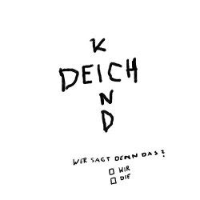
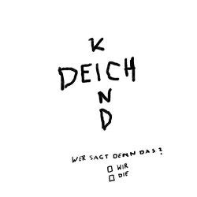

Einiges über mich
Name
Mein Name ist Simon. Der Name ist auf mehrere Personen aus der Bibel und auf einen Youtuber zur√ºckzuf√ºhren.ü§¶Spezies
Mein Spezies ist Mensch.üßëHerkunft
Ich bin in Deutschland geboren und wohne auch dort.Wohnort
Ich wohne in der Stadt Buchholz. üó∫Ô∏èGeburtsdatum
Ich wurde an einem 25. Oktober geboren, möchte aber nicht, dass man mir gratuliert. ODER MAN MICH MIT MEHL BEWIRFT! DAS IST LEBENSMITTELVERSCHWENDUNG!Anzahl Geschwister
1 üôçAnzahl Thekenschalen
Bei mir sind es nur 3 Thekenschalen, aber daf√ºr eine Schale mit Kidneybohnen. ü•ôHaustiere
Einerseits Spinnen (als M√ºckenf√§nger #Ausbeute), anderseits 2 Kaninchen. üê∞Religion und Glaube
Ich bin Christ.Hobbys und Interessen
Ich habe viele Hobbies oder allgemeine Interessen, deshalb hier nur ein Teil davon: Imkern, Latein, Programmierung & Technik, Eisenbahn, Naturwissenschaft, Rhetorik, Gitarre spielenErnährung
Ich bin einPflanzenfresser. Also ich esse keine tierischen Produkte. ü•îSt√∂rt mich
Mich stört Fleisch, das gegessen wird. Ich kann die Abwägungen im Kopf eines Fleischessers nicht nachvollziehen. Außerdem stören mich Angebereien und Vergleiche mit anderen Personen. Auch Gewalt lehne ich ab. Vorallem Geschlechterrollen und Festlegungen verschiedener Interessen durch andere widerstreben all meinen Prinzipien. Oft werde ich auch unterschätzt. Das ärgert mich sehr.Desinteresse
Ich habe mich mal für Fußball, Memes und Videospiele interessiert. Aber aus verschiedenen Gründen interessieren mich diese Themen nicht mehr stark.Sprachen
In der Schule lerne ich: Deutsch, Englisch, Latein,. Ich schweige aber auch gerne Mal.Stärken
Anscheinend liegt mir Schreiben, Lernen und Präsentieren sehr gut.Schwächen
Mir fällt es schwer neue Menschen kennenzulernen. Man sieht auch, dass ich keine Websites designen kann.Engagments für die Allgemeinheit
Mitglied bei Bündnis 90 / Die Grünen, regelmäßiges Müllaufsammeln bei mir im Ort, Regelmäßige Spenden an FridaysForFuture, Mitglied im Jugendrat BuchholzSchulform
Gymnasium, Digga!Lieblingsessen
Pilzpfanne, Auflauf mit veganem Käse, TomatenleisVideospiele, die ich spiele
Kein Einziges.Was andere an mir hassen:
Das hassen Menschen, denen ich begegnet bin, an mir: Wirbel in den Haaren, Aussehen, Überheblichkeit, Schüchternheit, Besserwisserei, Selbstkritik und VIELES MEHR.Musik, die ich höre:
(sortiert von oft gehört nach mäßig oft gehört)

 



Vorbilder und Inspirationsquellen, die ich habe:
(nicht sortiert)
- Freunde und Verwandte
- Robert Habeck
- Alexander von Humboldt
- Karl Lauterbach
- Kevin Kühnert
- Richard David Precht
- Jan Böhmermann
- Markus Lanz
- Olli Schulz
- Harald Lesch
- Rosa Luxemburg
- Barack Obama
- Martin Sonneborn
- Kurt Krömer
- Greta Thunberg
- Der Artegenosse
- Gregor Gysi
- Kurzgesagt
- Bibel, Jesus
- Martin Luther
- Martin Luther üëë
- NICHT Grosse-Brömer
- NICHT Armin Laschet
- NICHT Phillip Amthor
- NICHT Trymacs
Freundesliste
Oben: Hoher Freundschaftsrang /// Unten: Kein Freundschaftsrang mehr /// Links: Häufiges Treffen /// Rechts: Seltenes Treffen bis gar kein Treffen mehr
Wenn ein letztes Treffen mehrere Jahre zurückliegt, ist die entsprechende Person hier nicht aufgelistet.
LP
TS
TK
SN
BS
TSe
JA
FilP
JF
NLK